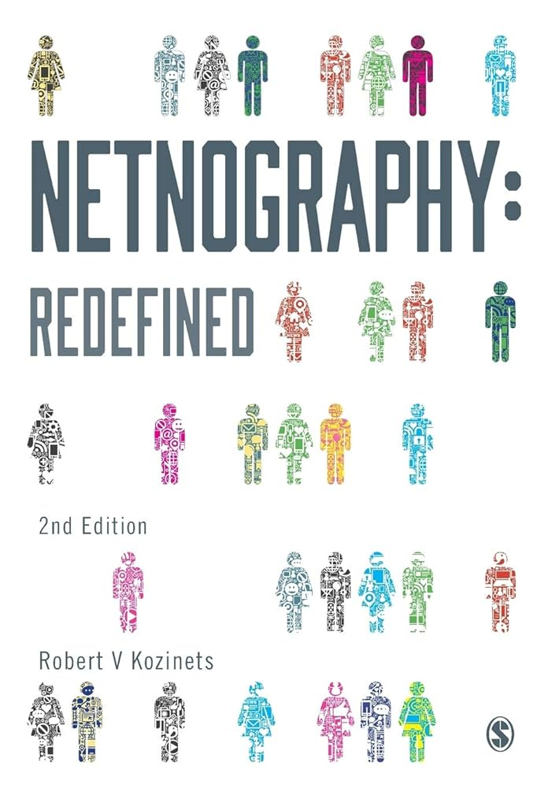
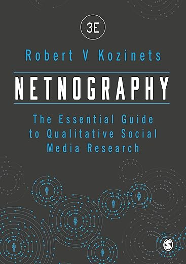
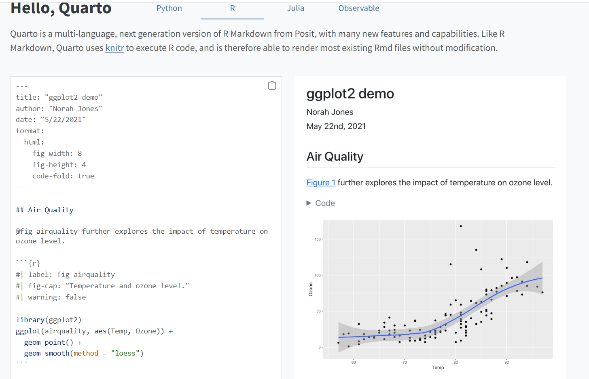
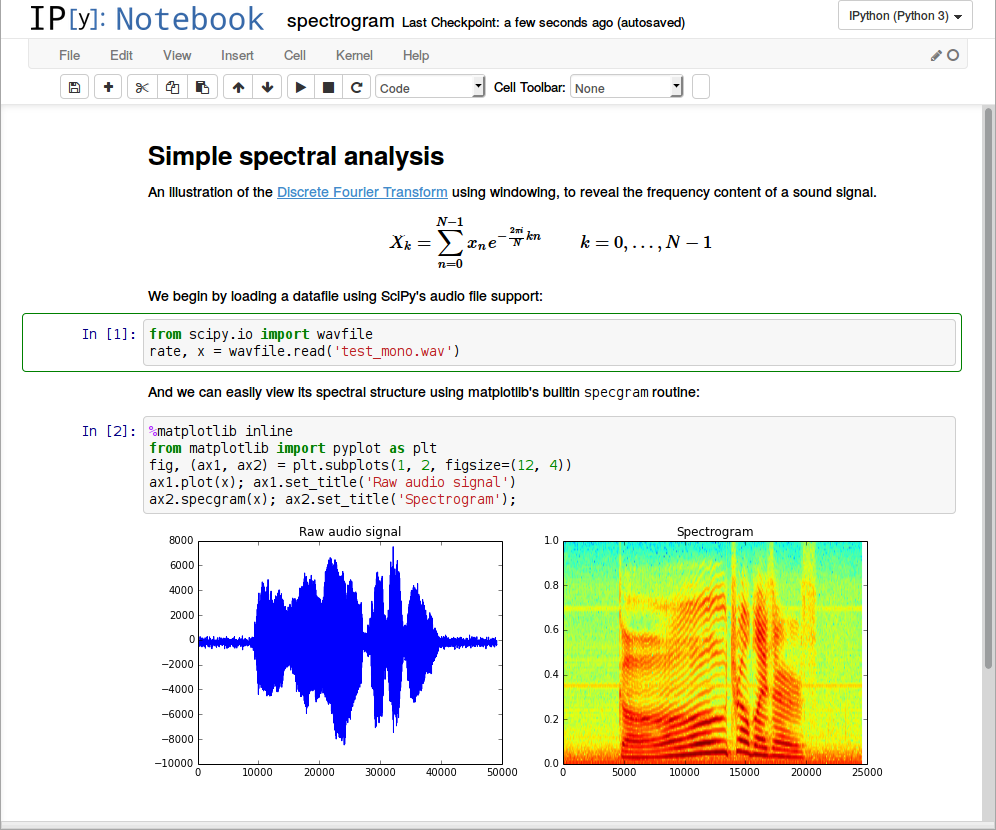
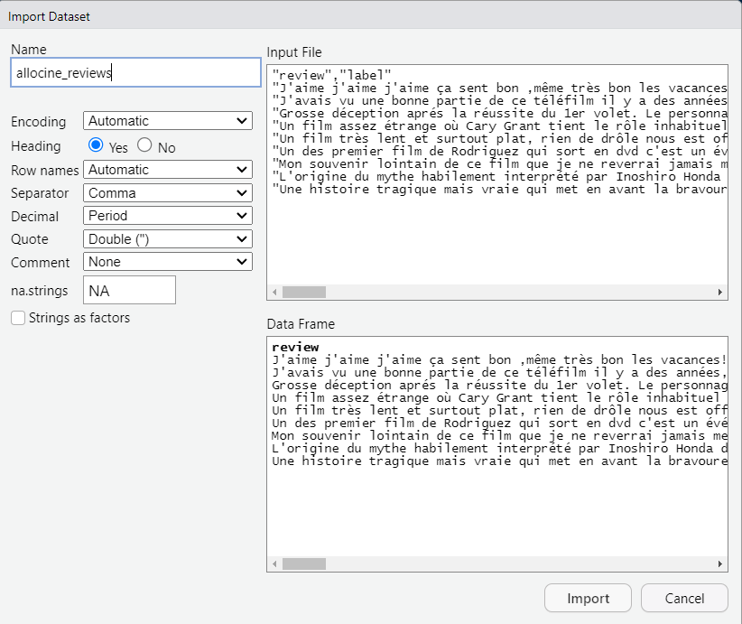
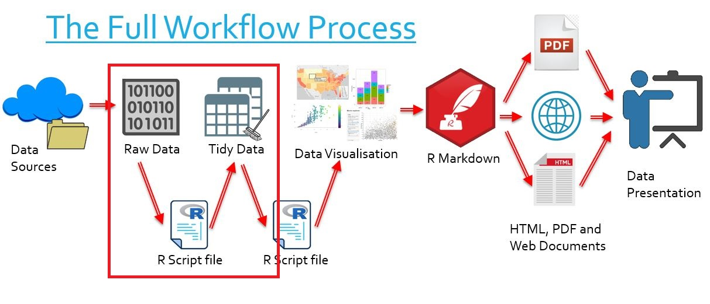
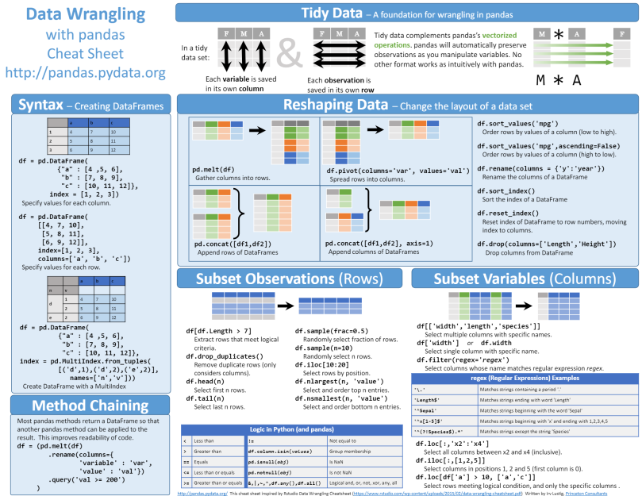
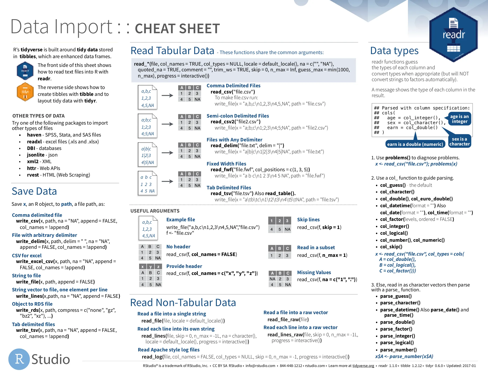

Études qualitatives sur le web (netnographie)
Introduction à la netnographie + outillage R & Python
Paris Dauphine - PSL
Objectif général du cours
Études qualitatives sur le web (M2 Marketing Digital, 22h, 3 ECTS)
Objectif global : savoir conduire une analyse textuelle sur un corpus.
Compétences visées
- Constituer un corpus pertinent
- Connaître et appliquer les principales procédures d’analyse :
- pré-traitement du corpus
- annotations
- analyses de fréquences & co-occurrences
- sentiment analysis
- topic modeling
- Utiliser R et/ou Python pour conduire l’analyse
- Restituer les résultats de manière structurée, reproductible et actionnable
Planning du cours
| Date | Horaire | Durée | Remarques |
|---|---|---|---|
| Lundi 08/09/2025 | 9h – 12h | 3h | Séance 1 |
| Mardi 09/09/2025 | 9h – 12h | 3h | Séance 2 |
| Mardi 09/09/2025 | 13h – 17h | 4h | Séance 3 |
| Lundi 15/09/2025 | 9h – 12h | 3h | Séance 4 |
| Mercredi 17/09/2025 | 9h – 12h | 3h | Séance 5 |
| Mercredi 17/09/2025 | 13h – 17h | 4h | Séance 6 |
| Vendredi 19/09/2025 | 9h – 11h | 2h | Séance 7 (clôture) |
Total : 22h
Évaluation & projet final
Projet final
- Évaluation commune avec l’UE Stratégies de distribution à l’ère du cross-canal
- Travail en groupes de 2–3 étudiants
- Projet : netnographie appliquée à une enseigne de distribution
À faire
- Collecte & analyse d’avis clients en ligne
- Production d’insights & de recommandations
- Mobilisation des cadres théoriques vus dans l’UE Stratégies de distribution
Livrables
- Rapport Quarto HTML
- Exposé de 15 minutes
Qu’est-ce que la Netnographie ?
- Adaptation de l’ethnographie au monde numérique
- Analyse des cultures, normes, significations, artefacts en ligne
- Approche qualitative articulable avec NLP
Note
Une des références : Kozinets, R. V. (2015). Netnography: redefined. sage.
 
Exemple fondateur : le café en ligne (Kozinets, 2002)
- Terrain : newsgroup <alt.coffee> (Usenet)
- Communauté : passionnés de café
- Participants : insiders, experts, touristes de passage
- Discussions : espresso, Starbucks, machines, rituels
Note
Cette étude a montré que les communautés en ligne pouvaient être étudiées comme de véritables terrains ethnographiques.

Constats de l’article - 1/2
- Distinction & statut (Bourdieu)
- Le vocabulaire (barista, crema, god shot, PID…) sert de marqueur d’expertise.
- Boundary work : les membres corrigent et excluent les novices → distinction insiders / touristes.
- L’équipement (moulins, machines pros) = signal de capital culturel et technique.
- Trajectoires de consommation
- Chemin typique : café commodité → espresso artisanal → machines coûteuses.
- Effet Diderot : achat d’un objet de qualité entraîne une cascade d’achats complémentaires (moulin, tamper, balance, eau filtrée).
- Logique d’escalade : montée en gamme + rationalisation (“il faut ça pour bien faire”).
Constats de l’article - 2/2
- Authenticité vs commodification
- Starbucks = symbole de standardisation (McDonaldisation, goût formaté).
- Artisanat = authenticité (origine, torréfaction, gestes, transparence).
- Débat : démocratisation de la culture café vs banalisation.
- Dimension quasi religieuse
- Rituels (purge, tassage, pré-infusion), objets sacrés (tamper, machine).
- Métaphores sacrées : la quête du “god shot” = expérience de grâce.
- Construction d’une mythologie communautaire : “révélation” gustative, quête initiatique.
Référence
Kozinets, R. V. (2002). The field behind the screen: Using netnography for marketing research in online communities. Journal of Marketing Research, 39(1), 61–72. https://doi.org/10.1509/jmkr.39.1.61.18935
De l’analyse au profil des participants
- Insiders : membres très actifs, co-construisent la culture et la légitimité du groupe
- Devotees : passionnés du sujet, mais moins interactifs socialement
- Minglers : aiment l’interaction sociale, mais peu attachés au thème central
- Tourists : de passage, observent sans réel engagement
À retenir
Cette typologie issue de alt.coffee montre comment les niveaux d’engagement structurent la vie d’une communauté en ligne.
Repères historiques et statut scientifique
- Méthode reconnue dans les recherches en marketing & consommation digitale
- Inscrite dans les méthodes qualitatives orientées sens & contexte
Redéfinition contemporaine (Kozinets, 2015)
“A specific set of related data collection, analysis, ethical and representational research practices, where a significant amount of the data collected and participant-observational research conducted originates in and manifests through the data shared freely on the Internet, including mobile applications.”
— Kozinets (2015, p. 80)
Conclusion
La netnographie n’est pas qu’une observation en ligne :
c’est un ensemble cohérent de pratiques méthodologiques et éthiques, adapté aux réseaux sociaux et aux usages mobiles.
Quand utiliser la netnographie ?
- Comprendre motivations, routines, valeurs des consommateurs en ligne
- Explorer insights VoC, controverses, parcours, usages
- Complémentaire du social listening volumétrique → vise la profondeur de l’analyse
Étapes clés - Kozinets (2002)
- Entrée culturelle
- Définir la question de recherche
- Identifier les communautés pertinentes (trafic, richesse, interactivité)
- Comprendre la culture du forum (langage, normes, acteurs)
- Définir la question de recherche
- Collecte et analyse des données
- Collecter les posts + écrire des notes de terrain
- Classer et coder les données (messages thématiques vs sociaux)
- Analyser et comparer les catégories émergentes
- Collecter les posts + écrire des notes de terrain
- Assurer une interprétation crédible
- Vérifier la cohérence interne (les résultats reflètent bien les données)
- Triangulation avec d’autres sources ou cadres théoriques
- Mettre en évidence les symboles, récits et significations portés par la communauté
- Vérifier la cohérence interne (les résultats reflètent bien les données)
- Mener une recherche éthique
- Transparence du chercheur (s’identifier, annoncer ses intentions)
- Anonymisation/pseudonymisation des données
- Demander la permission avant de citer des verbatims
- Transparence du chercheur (s’identifier, annoncer ses intentions)
- Validation auprès des membres (member checks)
- Partager les résultats avec la communauté
- Recueillir retours pour affiner l’interprétation
- Partager les résultats avec la communauté
Avantages & limites
Avantages
- Accès direct aux conversations in situ numériques
- Traces longitudinales (archives, historiques de forums)
- Faible intrusion
- Données riches, spontanées, peu coûteuses
Limites
- Fiabilité des identités : impossible de vérifier qui parle vraiment
- Représentativité discutable : biais d’auto-sélection, voix dominantes
- Moins de profondeur contextuelle que l’ethnographie classique
- Présence de bots / modération qui influencent les échanges
- Dépendance aux plateformes : accès (API, CGU), formats, disparition des contenus
- Contraintes éthiques : consentement, anonymisation, permission de citer
Éthique & RGPD
Repères éthiques
- Ne pas nuire : protéger les communautés et les individus observés.
- Public ≠ éthiquement public : le fait qu’un forum soit accessible ne signifie pas que ses membres acceptent d’être étudiés.
- Transparence adaptée : plus l’espace est privé (groupes fermés, Discord, Facebook), plus la demande d’autorisation/consentement est nécessaire.
- Ressources :
- AoIR Ethical Guidelines 3.0 (2019)
- CNIL — guides pratiques sur le RGPD
- AoIR Ethical Guidelines 3.0 (2019)
Les 6 principes du RGPD (CNIL)
- Finalité : ne collecter que pour un objectif précis et légitime.
- Minimisation : limiter la collecte aux seules données nécessaires.
- Exactitude : s’assurer que les données sont correctes et mises à jour.
- Limitation de conservation : ne pas garder indéfiniment, prévoir une durée claire.
- Intégrité & confidentialité : sécuriser techniquement et organisationnellement.
- Responsabilisation (accountability) : être en mesure de démontrer la conformité à tout moment.
De la netnographie… aux outils
Netnographie = comprendre les cultures en ligne
- Approche qualitative → profondeur & sens
- Observation, immersion, interprétation
- Inscription dans les méthodes qualitatives
Mais :
- Besoin de systématiser et de passer à l’échelle
- Multiplier les données (posts, avis, tweets, forums)
Prochaine étape
Découverte des outils numériques (R & Python)
→ collection des données, prétraitement, annotation, analyse de corpus… → visualisation et restitution
Outils du cours
R et Python : deux langages incontournables
- R : spécialisé en statistiques, data science et analyse textuelle
- Python : plus généraliste, très utilisé en IA, web et NLP
- Les deux sont gratuits, open-source et ont de grandes communautés
Note
Packages (R) ou Modules (Python) = extensions prêtes à l’emploi.
→ Exemple :
- R : tidyverse, ggplot2
- Python : pandas, scikit-learn, nltk
Qu’est-ce qu’un IDE ?
IDE = Integrated Development Environment = Environnement de développement intégré
Un logiciel qui regroupe tout ce qu’il faut pour programmer :
- Écrire du code
- Exécuter le code pas à pas
- Visualiser les données et graphiques
- Gérer les fichiers d’un projet
- Installer et utiliser des packages/modules
- Débuguer le code
Quelques IDE populaires
- RStudio → dédié à R, simple et pédagogique
- VS Code → léger, extensible (R + Python et autres langages)
- Positron → nouveau projet des créateurs de RStudio (multi-langages)
- PyCharm → puissant pour Python
Note
👉 Pour commencer : RStudio (si R) ou VS Code (si Python).
Ensuite, chacun choisira selon ses besoins.
Documents reproductibles : pourquoi et comment ? 1/2
- Problème classique :
- Le texte est dans Word/PowerPoint
- Le code dans un script séparé (R, Python)
- Les graphiques dans des fichiers à part
→ Risque : incohérences, copier-coller, perte de temps
- Le texte est dans Word/PowerPoint
Concept clé
- Un document reproductible = texte, code et résultats (graphiques, tableaux) réunis dans un même fichier.
- À chaque rendu : le code est réexécuté → résultats toujours à jour.
Avantages
- Transparence & traçabilité
- Gain de temps (pas de copier-coller)
- Partage et collaboration facilités
Documents reproductibles : pourquoi et comment ? 2/2
Note
C’est ce besoin de mixer texte + code + résultats qui a conduit à l’apparition de :
- RMarkdown (R, puis Python/Julia)
- Jupyter Notebook (plutôt Python, interactif)
- Quarto (standard plus récent, multi-langages, multi-supports : HTML, PDF, slides, livres)
Quarto

Jupyter Notebook

Formats de données textuelles
- Les corpus textuels peuvent venir de sources très différentes
- Chaque format a ses avantages et limites
- L’important : savoir les reconnaître et les charger
Le CSV (Comma-Separated Values)
Note
- Format texte tabulaire, le plus universel.
- Facile à ouvrir dans Excel, R, Python, etc.
- Moins efficace pour les gros volumes de données.
- Délimiteurs possibles :
,(virgule),;(point-virgule),\t(tabulation)
Json (JavaScript Object Notation)
Note
- Format texte structuré, hiérarchique, très utilisé pour les API web.
- Idéal pour les données imbriquées (ex. : tweets avec métadonnées).
Charger un fichier de données
Chemin absolu
- Adresse complète depuis la racine de l’ordinateur
- Exemple :
C:/Users/Olivier/Documents/data/allocine_reviews.csv(Windows)
/Users/Olivier/Documents/data/allocine_reviews.csv(Mac/Linux)
- ✅ Toujours exact
- ❌ Varie selon la machine, moins portable
Chemin relatif
- Adresse par rapport au projet courant
- Exemple :
data/allocine_reviews.csv
- ✅ Portable et pratique pour partager un projet
- ❌ Dépend de l’organisation des dossiers
Bonne pratique
👉 Créer un dossier data/ dans le projet et utiliser un chemin relatif pour tous les fichiers CSV.
Depuis l’interface Rstudio (R) ⚠️ non reproductible avec Quarto
Dans RStudio :
- Menu Environment (en haut à droite)
- Bouton Import Dataset
- Choisir From Text (base) ou From Text (readr)
- Menu Environment (en haut à droite)

Le tidyverse en R
- Collection de packages conçus pour rendre la manipulation des données plus simple et cohérente.
- Principes :
- Données organisées en tables (data frames).
- Chaque colonne = variable, chaque ligne = observation.
- Syntaxe claire grâce à l’opérateur pipe (
|>ou%>%).
- Données organisées en tables (data frames).
Principaux packages
- readr → importer des fichiers (CSV, TSV…)
- dplyr → manipuler les données (filtrer, trier, transformer)
- tidyr → réorganiser les tables
- ggplot2 → visualisation
- stringr → travailler sur du texte
- tidytext → analyser du texte
Tydiverse

Utiliser une fonction : R vs Python
🟦 R — Packages
- Installer le package (une seule fois).
- Charger le package à chaque nouvelle session.
- Appeler la fonction fournie par ce package.
Exemple : le package stringr contient des fonctions pour manipuler des chaînes de caractères (longueur, remplacement, etc.).
Utilisation : library(stringr) puis str_length("Bonjour") pour la longueur de “Bonjour”.
🐍 Python — Modules
- Installer le module ou package (une seule fois, via
pipouconda).
- Importer le module dans votre script ou notebook.
- Appeler la fonction disponible dans ce module.
Exemple : le module numpy propose des fonctions mathématiques (racine carrée, moyenne, etc.).
Utilisation : import numpy as np puis np.sqrt(16) pour la racine carrée de 16.
Charger un fichier
| review | label |
|---|---|
| J’aime j’aime j’aime ça sent bon ,même très bon les vacances!!! Un magnifique bateau des personnages qu’on aimerait tous avoir pour amis, voilà une très bonne comédie on se laisse porter par cette fine équipe, le temps passe très vite et aïe mes zygomatiques, j’aime vraiment beaucoup cette univers dans lequel tout peut arriver. | 1 |
| J’avais vu une bonne partie de ce téléfilm il y a des années, je me souviens encore à quel point je m’étais ennuyé, et je ne m’étais pas fait prié pour partir avant la fin. Je me souviens également que c’était très mal joué, long, avec des FX mal faits et que Charlie faisait plus pisseuse capricieuse qu’héroïne ayant du mal à contrôler son don. Par contre je me demande si certaines critiques ne sont pas ironiques tant ils vont loin dans l’erreur. Encore une suite typique : pour faire du fric, pas de la qualité. | 0 |
| Grosse déception aprés la réussite du 1er volet. Le personnage de Simon Eskenazy ne laisse pas à Antoine de Caunes une grande marge de manoeuvre en matière de jeu et à peu prés tous les personnages vous tapent sur les nerfs, d’une manière ou d’une autre, dans leur caricature, ou leurs personnalités manipulatrices et détestables : une belle collection de névrosés. Medhi Dehbi est sans doute la révélation du film, dans un rôle toutefois detestable de ce travesti musulman, pute jusqu’au bout des ongles, et une caricature qui n’inspire à aucun moment la tolérance, mais plutot 3 paires de baffes…. | 0 |
| Un film assez étrange où Cary Grant tient le rôle inhabituel d’un personnage pas très sympathique et dont les contours sont assez flous. Flou est d’ailleurs mon sentiment dominant au sujet de ce film au très mauvais titre français (titre original : The Toast of New York, que l’on pourrait traduire par : La Coqueluche de New York), au scénario confus et déséquilibré, à la mise en scène maladroite et à la direction d’acteurs imprécise. Bref, ce n’est pas un film indispensable et il ne vaut pas la peine de s’y attarder davantage | 0 |
| Un film très lent et surtout plat, rien de drôle nous est offert. Sans grand intérêt, avec peut d’ambition pour nous divertir. | 0 |
| Un des premier film de Rodriguez qui sort en dvd c’est un événement surtout un film si méconnu qui plus n’est réellement qu’un téléfilm. Très petit budget et ça ce voit, le scénario est rikiki aussi mais franchement sa reste du Rodriguez et c’est bien foutu. C’est violent, inattendu, bien mis en scène et le casting est vraiment sympathique. Un bon petit téléfilm qui gagne à être vu par les fans du réalisateur. | 1 |
| Mon souvenir lointain de ce film que je ne reverrai jamais me rappelle qu’Alain Resnais fait sans doute parti du groupe de grands réalisateurs de la seconde moitié du XXème siècle qui s’efforcent de faire quelque chose de nouveau et d’original ou alors maîtrisé tout en nous ennuyant ferme tout le long du film. Les Herbes Folles est un vrai OFNI : objet filmique nul et intellectuello-cinématographique. | 0 |
| L’origine du mythe habilement interprété par Inoshiro Honda dans un film incroyablement moderne et frais pour l’époque. La légende est née 5/5 | 1 |
| Une histoire tragique mais vraie qui met en avant la bravoure et les sacrifices que l’homme peut faire pour survivre. Très belle leçon de courage et d’abnégation. | 1 |
Manipuler les données tabulaires
- Filtrer les lignes selon une condition (
filter()en R,df[df['col'] > val]en Python)
- Sélectionner des colonnes spécifiques (
select()en R,df[['col1', 'col2']]en Python)
- Créer de nouvelles colonnes (
mutate()en R,df['new_col'] = ...en Python)
- Résumer les données par groupe (
group_by()+summarize()en R,df.groupby('col').agg(...)en Python)
Système de “pipe”
- Avec magrittr (
%>%) ou le pipe natif (|>), on peut enchaîner plusieurs opérations (filter(),mutate(),summarize()) de façon lisible
Note
👉 Tidyverse = boîte à outils essentielle pour préparer et analyser un corpus textuel.
Dplyr Cheatsheet
Cheatsheet Python

Cheatsheet R Tidyverse

Annexes — Commandes utiles Quarto
Raccourcis reveal.js
O → Overview (vue d’ensemble des slides)
- B → Écran noir (pause, coupure visuelle)
- ← / → → Naviguer slide précédente/suivante
- ↑ / ↓ → Naviguer dans les sous-slides
- F → Plein écran
- ESC → Quitter le mode plein écran
- S → Mode présentateur (affiche notes, timer, preview)
- . → Écran noir (équivalent B)
- , → Écran blanc (utile si besoin)
Astuce
Le plus pratique en cours :
- O pour retrouver sa slide d’un coup
- S pour voir ses notes en parallèle